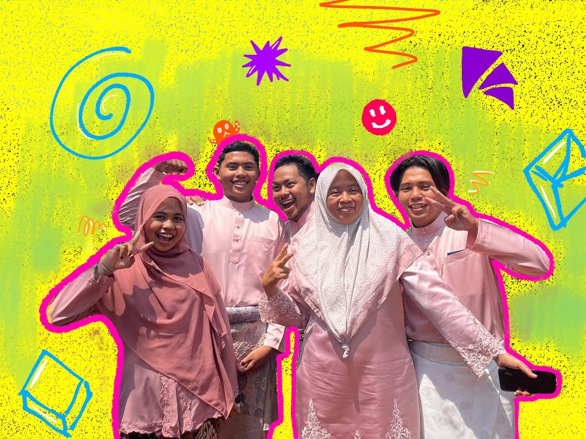
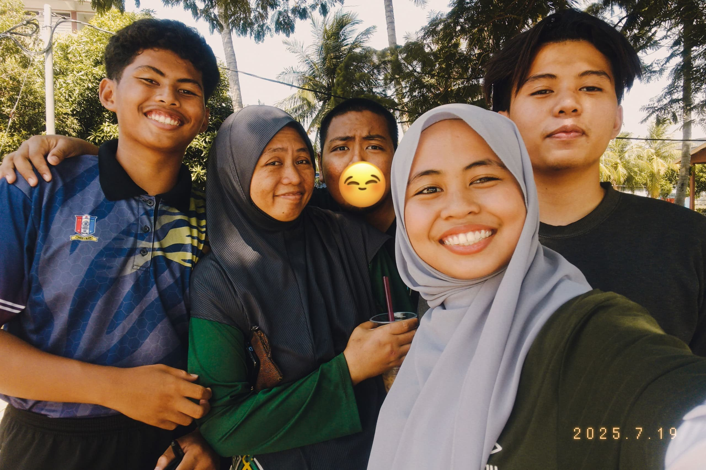
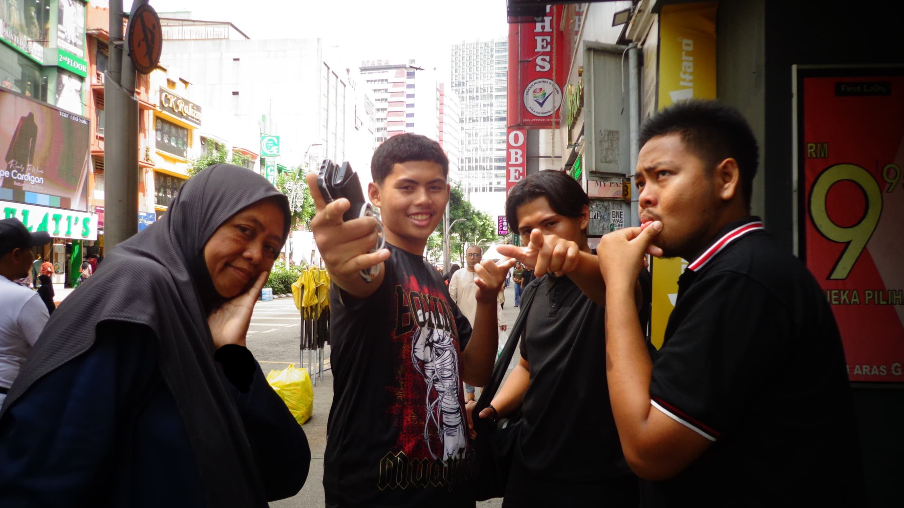
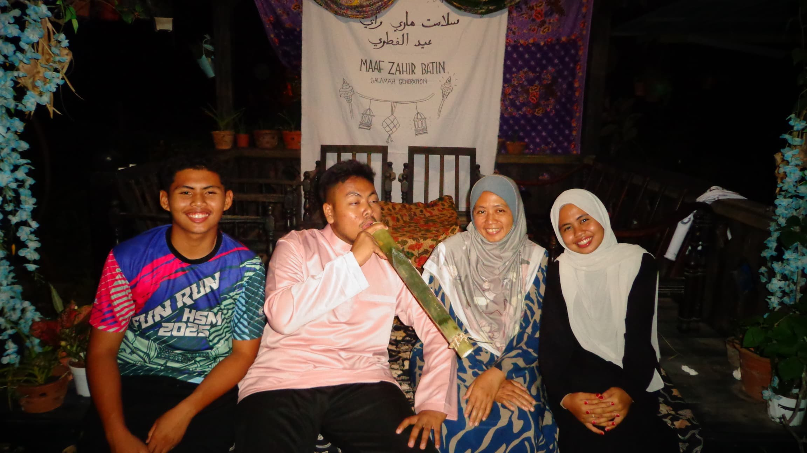
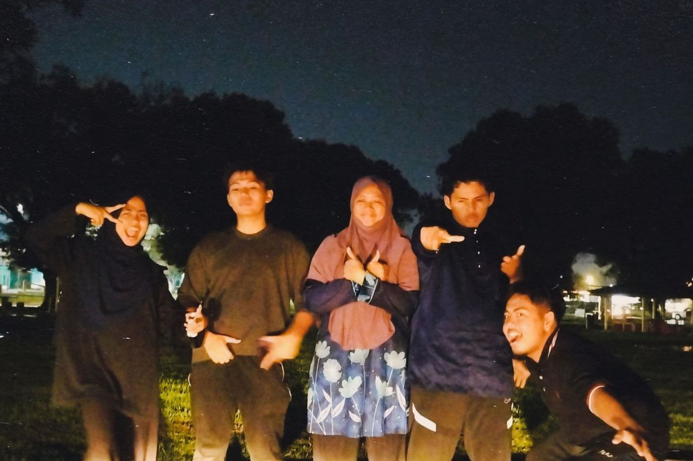
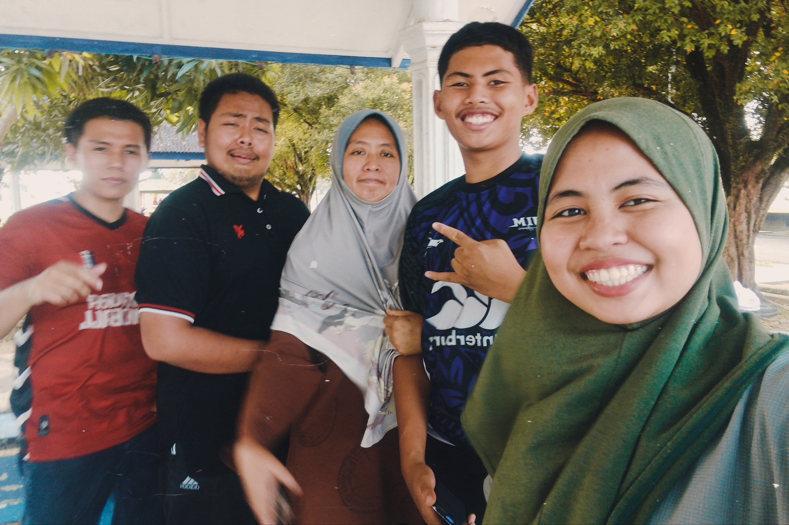
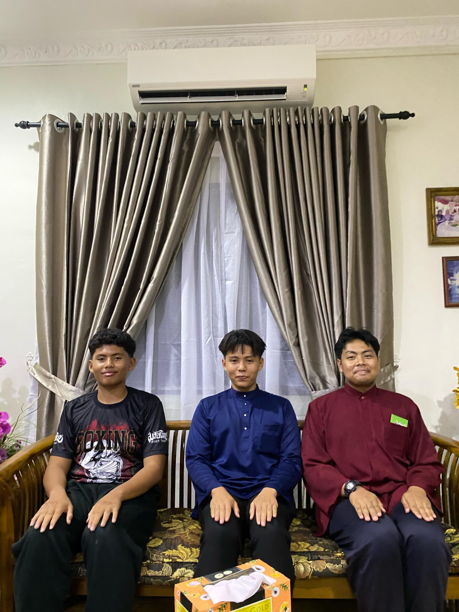
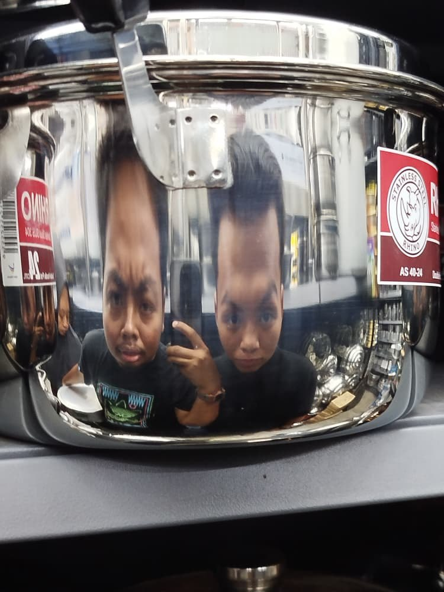
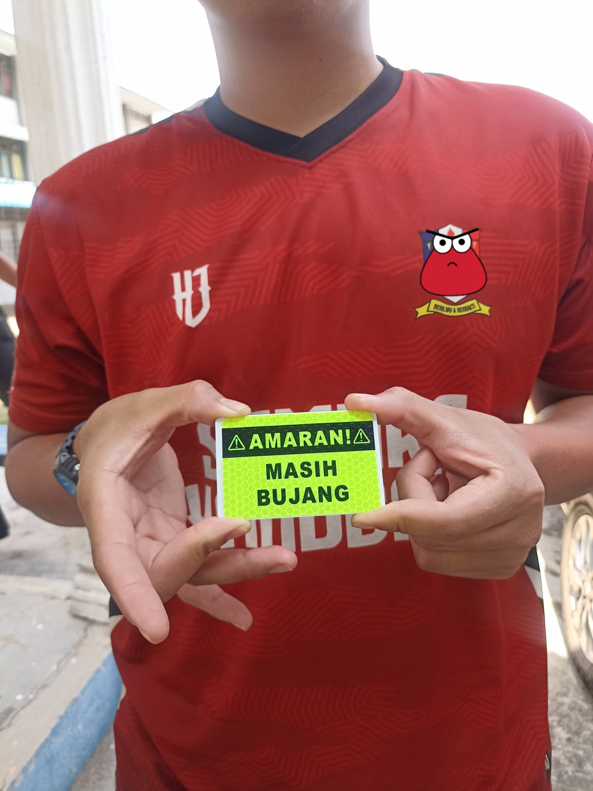

My family is my life since I never know a day without them. I have a mom, dad, two big brothers and one little brother where one of my big brothers is my Irish twins which means we were born in the same year but different month. At home, we speak Malay, English, Javanese and sometimes Sabahan dialect even most of it was not serious. My parents and siblings are supportive, funny and they cook delicious food especially my mom. Also, I think my brothers cook Maggie way better than me that sometimes I prefer them to cook it. I never feel that my Maggie taste better than them.
We usually spend our time together by watching movies or go outside. Since we live near Gunung Ledang, my little brother often make a request for us to go there and splashing around and that is where we are going to be. Besides that, my brothers love gaming since the first time I knew them and they always ask me to join them but I refused sometimes. Based on my observation, they play Minecraft, Mobile Legends, Roblox, Valorant, Fortnite and many more that I cannot remember.
My family did not have many photos together since we rarely took it and we started to realize it only after my dad passed away two years ago. At that moment, we become discern that we do not have much photo with each other and starting to capture every moment whenever we had the chance. Al-Fatihah to my late dad, Sariffudin bin Basar.








